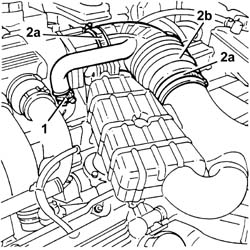

1048A48 throttle heater sleeve - r r
- Path
- Procedures > 10 ENGINE > 1048 ENGINE AIR SUPPLY CIRCUIT > 1048A vacuum air circuit > 1048A48 throttle heater sleeve - r r
- Kind
- repair procedure (removal / refitting; the operation number is the code)
- Applies to
- engines: 2.5 V6, 3.2 V6; all production periods
- Interactive page
- https://sloeber94.github.io/elrnDB-a156/en/#/3237530
Applies to: engines: 2.5 V6, 3.2 V6; all production periods
 Removing
Removing
 Refitting
Refitting1. Disconnect the oil vapour recirculation pipe from the right cylinder head.
2. Loosen the bands (2a) and remove the hose between the resonator and the butterfly casing (2b).

Applies to: engines: 2.5 V6, 3.2 V6; all production periods
Refitting
RemovingFit the hose between the resonator and the butterfly casing, then fix it using the bands.
Connect the oil vapour recirculation pipe to the right cylinder head.
Topics that link to this page (7)
- 1820B47 rigid pipe from master cylinder (pump) to vibration damper - r r for right hand drive versions
- 1820B51 rigid input pipe to vibration damper - r r for rhd versions
- 2110A10 manual gearbox and differential - r + r
- 3340B53 rigid pipe (one) from master cylinder (pump) to abs hydraulic control unit - r r for rhd versions
- 5510C14 ignition coil/s - r+r
- 5510C18 right hand cylinder head ignition coil - r+r
- 5510D10 spark plugs - r+r